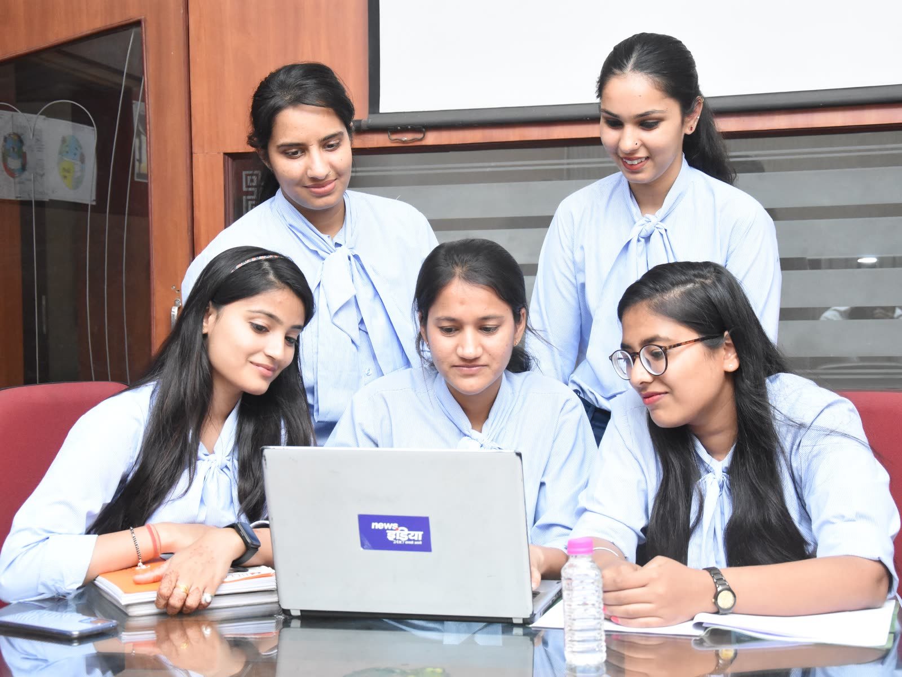

students with active platform access
of the largest private universities served
average relationship with top clients
questions across 9 streams
The challenge
Learning is not the gap. Proof of capability is.
Students start from different places but get the same preparation. Training, assessment, projects and placement run in separate silos. Leadership asks one question and rarely gets one answer.
Employable 54.8%
Not yet job-ready 45.2%
Indian graduates assessed as employable. India Skills Report 2025
of Indian graduates assessed as employable. India Skills Report 2025
of core skills expected to change by 2030. WEF Future of Jobs 2025
spent by industry to make each fresher productive.
Seven questions every student should be able to answer
- Where do I stand?
- Where do I want to go?
- What should I learn next?
- How will I prove it?
- Who should guide me?
- Which opportunities fit?
- What did I achieve?
Skills get a student shortlisted. Capabilities get them hired, promoted or funded.
SkillWiz builds and evidences both.
| Skill | Capability | |
|---|---|---|
| Focus | “I know how” | “I can adapt and create value” |
| Shelf-life | Short | Long |
| Evidence | Scores, certificates | Projects, mentor notes, Karm-Patri trend |
SkillWiz 2.0 at a glance
Not a course library. Not a placement portal. The layer that connects them.
An AI-powered university transformation platform: the operating layer that joins learning, assessment, mentoring and placement into one record.
- ✕Not a course library
- ✕Not a placement portal
- ✓The layer that connects them
The student journey
Eight stages. One loop. Every attempt counts.
Four years, one compounding record
Karm-Patri · कर्म-पत्री
The résumé, verified.
A living, evidence-backed record of employability and entrepreneurship that compounds over the degree, updates every semester and can be shared with a recruiter in one click.
Placement committees move from debate to data review: progress is discussed as demonstrated capability, not just attendance, marks or final placement status.
See a live Karm-PatriPlaceability Index
87 out of 100 · updated every semester
| The traditional résumé | The Karm-Patri |
|---|---|
| What the student claims | What is verifiably true about the student |
| Self-reported; cannot be verified | Platform-verified and tamper-evident |
| Written once, rarely updated | Updated continuously as the student grows |
| Same template for every graduate | Unique to each student and discipline |
Two outcomes
A job is not the only definition of success.
Employability
- Day-0 productivity orientation
- JD analysis and competency mapping
- Skill-gap analysis and readiness score
- Company mocks and AI interviews
Result: capable graduates, Day-0 productive.
Entrepreneurship
- Idea-to-solution thinking
- Prototype and project evidence
- Incubation, mentors and capital linkages
- Founder Track inside the Karm-Patri
Result: student founders, ventures and incubation.
EUTP: a founder pipeline built and proven at KIIT
Four layers: a student founder pipeline, an AI platform that tracks ventures, incubation with access to capital, and an industry and mentor network.
students
active startups
industry links

High-growth sectors in view · Industry Radar
The sectors where India is hiring and building
One platform, every stakeholder
One record. A view for every role.
Portfolio
Thirteen products. Seven families. One MoU, one SLA.
Why SkillWiz
We do not pitch what we will build.
Single-point accountability
One team picks up the call on exam day. The same team as nine years ago.
Continuous evolution
Interface refreshed three times. Student data and history never lost.
Integrations honoured
Workflows built in 2018 still run in 2026.
Loyal pricing
Renewal increases capped at annual inflation.
Trusted at scale
students with active access
large private universities
Customer logos and testimonials are shared under NDA.
We replaced four vendors with SkillWiz over 18 months. The administrative saving alone covered the contract.
Vice-Chancellor, top-tier private university, South India
Implementation
Start small. Prove it. Scale.
Discovery
Workshops, data mapping, KPI baseline
Deliverable Project charter · configuration plan
First batch
Baseline, learning, assessment, projects, dashboards
Deliverable Live platform · fortnightly reports
Review
Adoption, evidence, stakeholder feedback
Deliverable Scale, refine or stop recommendation
Scale
Rollout across programmes, years or schools
Deliverable Institution-wide deployment · governance cadence
Student data stays with the University.
Aligned with the Digital Personal Data Protection Act, 2023. Role-based access, SSO, and data returned on exit.
Talk to us
See it on your own programmes.
We build the demonstration around your students, priority industries, placement model and incubation ecosystem.
What you will see in the demo
- Student baseline and goal-setting
- AI assessment and skill-gap analysis
- Karm-Patri: the evolving profile
- Mentor and faculty workflow
- Cohort and university dashboards
- Entrepreneurship journey